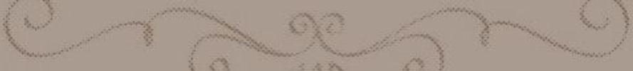

DecisionIA

Sobre o Programa:
°|A criação do programa tem como intuito orientar as escolhas do dia a dia,
já que muitas pessoas têm dificuldade na tomada de decisões. O usuário precisa descrever a situação ou
seus pensamentos sobre o assunto. O sistema analisa essa descrição, apresentando as vantagens
e desvantagens ou descrições perante a atividade escolhida, e, em seguida,
faz uma recomendação sobre qual atitude tomar ou alguma recomedação. O projeto busca mostrar
que, mesmo a IA tendo seus pontos negativos, ela traz mais acessibilidade e apoio nas
decisões diárias e dar recomendações, fazendo com que um processo que poderia levar dias dure apenas minutos.
Use com diversão e moderação